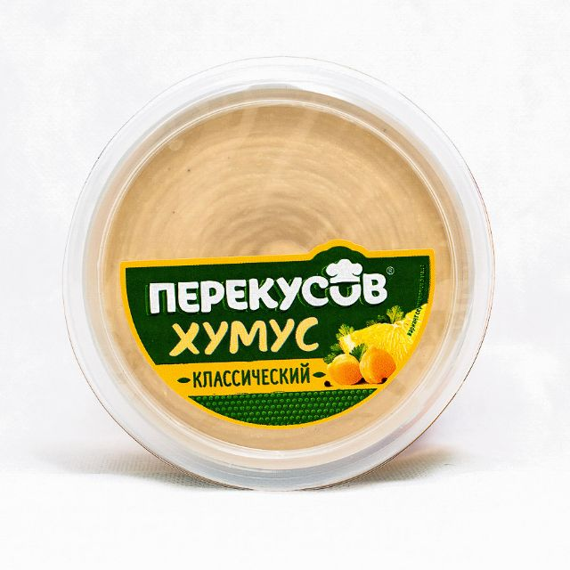

Классический
Нут, тахини и чеснок — базовый вкус для завтраков и перекусов.
Состав и пищевая ценность
- Состав
- нут, вода, кунжутная паста (тхина), масло подсолнечное, соль, чеснок, регулятор кислотности — лимонная кислота (Е330), перец чёрный, консерванты: бензоат натрия (Е211), сорбат калия (Е202)
- Аллергены
- кунжут
- На 100 г
- белки 5.5 г, жиры 20 г, углеводы 10 г
- Хранение
- +2…+6 °C, срок 60 суток; после вскрытия — 5 суток